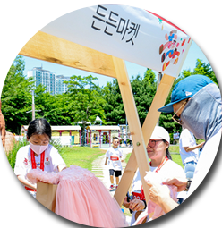

국제어린이마라톤알아보기
마라톤행사안내
전 세계 식량위기의 주원인인 기후위기의 심각성을
체험해볼 수 있는 약 4km의 미니 마라톤 코스입니다.
마라톤 기념품 안내
사전배송기념품안내
무지티셔츠, 티셔츠DIY스티커, 배번표,
플로깅키트(목장갑, 생분해봉투), 행사안내 리플렛
*기념품은 주최 측 사정에 따라 변동될 수 있습니다.
든든마켓안내
지구 환경 보호 실천을 위한 중고품 판매로
자원순환에 동참하는 나눔장터 `든든마켓`을 운영합니다.
든든마켓 구매는 별도 사전 신청없이 현장에서 바로 참여가 가능합니다.
아동을 지키는 착한 굿즈
"Savethegoods"는 의미있는 일상을 위해
세이브더칠드런이 선보이는 라이프스타일 굿즈 브랜드입니다
판매수익금은 국내외 위기아동지원사업에 사용됩니다.